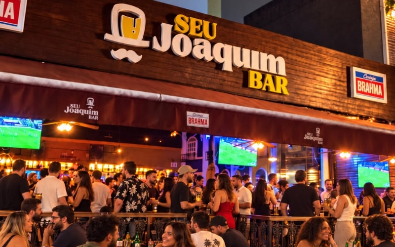

Triângulo das Bermudas & Seu Joaquim Bar
Música ao vivo, encontros e a energia do polo boêmio mais famoso da capital.
Na Praia do Canto, o Triângulo das Bermudas é um dos endereços mais conhecidos da noite capixaba. Essa região se concentra principalmente entre as ruas Joaquim Lírio e João da Cruz, com bares e restaurantes, com tanto entretenimento que movimentam o bairro.
O nome tem uma explicação divertida: há mais de duas décadas, frequentadores brincavam que se perdiam por ali entre conversas, bares e encontros com amigos quando percebiam, a noite já tinha virado o nascer do sol.
A Rua Viva, no trecho da Rua Joaquim Lírio, foi criada para favorecer o lazer, com restrição de circulação de veículos em determinado horário. É uma região para quem gosta de escolher um lugar, encontrar gente, experimentar um drink e deixar a noite acontecer. A casa divulga programação com música ao vivo, samba e pagode em datas específicas.
Local: Rua Joaquim Lírio, 778, Praia do Canto, Vitória.
Horários:
Terça a sábado a partir das 17h
Domingos com almoço e pagode a partir das 12h
Telefone: (27) 99926-9087
Instagram: @seujoaquimbar